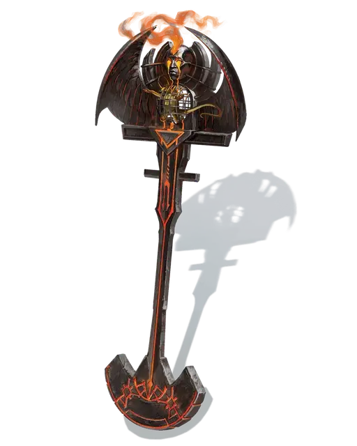

Боевое знамя войск ада
Battle Standard of Infernal Power
Чудесный предмет, очень редкий (требуется настройка)

Рекомендованная стоимость 5 001-50 000 зм
Это выкованное в аду боевое знамя, сделано из адского железа и снабжено маленькой, не открывающейся клеткой, содержащей квазита [quasit]. Захваченный квазит недееспособен, а его клетка имеет КД 19, 10 хитов и обладает иммунитетом ко всем видам урона, кроме урона силовым полем. Если квазита убивают или каким-то образом освобождают, он исчезает в облаке дыма, а в клетке появляется новый, при условии, что клетка цела.
Пока вы держите знамя, ваши атаки оружием и атаки всех союзных существ в радиусе 300 футов от вас считаются магическими при определении преодоления сопротивления и иммунитета к немагическим атакам и урону.